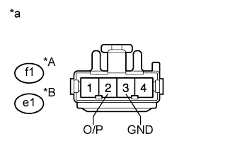
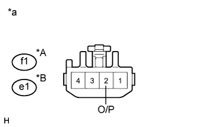
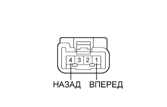

DTC B2651 Неисправность датчика наклона |
| Код DTC | Условие обнаружения DTC | Неисправный участок |
| B2651 | Крайние переднее и заднее положения, определенные датчиком, совпадают. |
|
| 1.ВЫПОЛНИТЕ ДИАГНОСТИКУ В РЕЖИМЕ ACTIVE TEST С ПОМОЩЬЮ ПОРТАТИВНОГО ДИАГНОСТИЧЕСКОГО ПРИБОРА (РАБОТА ЭЛЕКТРОДВИГАТЕЛЯ ПРИВОДА СИДЕНЬЯ) |
Выберите режим Active Test, с помощью портативного диагностического прибора подайте команду управления, после чего проверьте работу электродвигателя привода сиденья (Нажмите здесь).
| Информация на дисплее прибора | Испытываемое устройство | Диапазон регулирования | Замечание по диагностике |
| Seat Reclining | Управление наклоном сиденья | Front (вперед) / OFF (ВЫКЛ) / Rear (назад) | - |
|
| ||||
| OK | |
| 2.ПРОВЕРЬТЕ ПЕРЕКЛЮЧАТЕЛЬ ЭЛЕКТРОПРИВОДА ПЕРЕДНЕГО СИДЕНЬЯ (ЦЕПЬ ЭЛЕКТРОДВИГАТЕЛЯ НАКЛОНА) |
|  |
Отсоедините разъем f1*1 или e1*2 электродвигателя.
Измерьте напряжение в соответствии со значениями, приведенными в таблице.
| Контакты для подключения диагностического прибора | Положение переключателя | Заданные условия |
| f1-2 (O/P) - f1-3 (GND) | Переключатель наклона в положении ON (ВКЛ) | 4,8 - 5,1 В |
| Контакты для подключения диагностического прибора | Положение переключателя | Заданные условия |
| e1-2 (O/P) - e1-3 (GND) | Переключатель наклона в положении ON (ВКЛ) | 4,8 - 5,1 В |
| *A | Для моделей с левосторонним рулевым управлением |
| *B | Для моделей с правосторонним рулевым управлением |
| *a | Вид спереди разъема со стороны жгута проводов: (к спинке переднего раздельного сиденья [электродвигателю наклона]) |
|
| ||||
| OK | |
| 3.ПРОВЕРЬТЕ СПИНКУ ПЕРЕДНЕГО РАЗДЕЛЬНОГО СИДЕНЬЯ В СБОРЕ (ЭЛЕКТРОДВИГАТЕЛЬ НАКЛОНА) |
|  |
Подсоедините разъем f1*1 или e1*2 электродвигателя.
Измерьте напряжение в соответствии со значениями, приведенными в таблице.
| Контакты для подключения диагностического прибора | Положение переключателя | Заданные условия |
| f1-2 (O/P) - масса | Переключатель наклона в положении ON (ВКЛ) | 4,5 - 4,8 В |
| Контакты для подключения диагностического прибора | Положение переключателя | Заданные условия |
| e1-2 (O/P) - масса | Переключатель наклона в положении ON (ВКЛ) | 4,5 - 4,8 В |
| *A | Для моделей с левосторонним рулевым управлением |
| *B | Для моделей с правосторонним рулевым управлением |
| *a | Устройство с подсоединенным жгутом проводов (спинка переднего раздельного сиденья в сборе [электродвигатель наклона]) |
|
| ||||
| OK | ||
| ||
| 4.ПРОВЕРЬТЕ ЖГУТ ПРОВОДОВ И РАЗЪЕМ (ПЕРЕКЛЮЧАТЕЛЬ ЭЛЕКТРОПРИВОДА ПЕРЕДНЕГО СИДЕНЬЯ - ЭЛЕКТРОДВИГАТЕЛЬ НАКЛОНА) |
Отсоедините разъем b5*1 или a5*2 переключателя.
Отсоедините разъем f1*1 или e1*2 электродвигателя.
Измерьте сопротивление в соответствии со значениями, приведенными в таблице ниже.
| Контакты для подключения диагностического прибора | Условие | Заданные условия |
| b5-11 (SSRR) - f1-2 (O/P) | Всегда | Менее 1 Ом |
| b5-1 (SGND) - f1-3 (GND) | Всегда | Менее 1 Ом |
| b5-11 (SSRR) - масса | Всегда | 10 кОм или более |
| b5-1 (SGND) - масса | Всегда | 10 кОм или более |
| Контакты для подключения диагностического прибора | Условие | Заданные условия |
| a5-11 (SSRR) - e1-2 (O/P) | Всегда | Менее 1 Ом |
| a5-1 (SGND) - e1-3 (GND) | Всегда | Менее 1 Ом |
| a5-11 (SSRR) - масса | Всегда | 10 кОм или более |
| a5-1 (SGND) - масса | Всегда | 10 кОм или более |
|
| ||||
| OK | ||
| ||
| 5.ПРОВЕРЬТЕ СПИНКУ ПЕРЕДНЕГО РАЗДЕЛЬНОГО СИДЕНЬЯ В СБОРЕ (ЭЛЕКТРОДВИГАТЕЛЬ НАКЛОНА) |
|  |
Снимите спинку переднего раздельного сиденья в сборе (электродвигатель наклона) (Нажмите здесь).
Убедитесь, что когда к контактам разъема электродвигателя наклона подключена аккумуляторная батарея, спинка сиденья плавно перемещается.
| Условия измерений | Направление перемещения |
| Положительный (+) вывод аккумуляторной батареи → 1 (FWD) Отрицательный (-) вывод аккумуляторной батареи → 4 (BACK) | Спинка сиденья перемещается вперед |
| Положительный (+) вывод аккумуляторной батареи → 4 (BACK) Отрицательный (-) вывод аккумуляторной батареи → 1 (FWD) | Спинка сиденья перемещается назад |
|
| ||||
| OK | |
| 6.ПРОВЕРЬТЕ ЖГУТ ПРОВОДОВ И РАЗЪЕМ (ПЕРЕКЛЮЧАТЕЛЬ ЭЛЕКТРОПРИВОДА ПЕРЕДНЕГО СИДЕНЬЯ - ЭЛЕКТРОДВИГАТЕЛЬ НАКЛОНА) |
Отсоедините разъем b4*1 или a4*2 переключателя.
Отсоедините разъем f1*1 или e1*2 электродвигателя.
Измерьте сопротивление в соответствии со значениями, приведенными в таблице ниже.
| Контакты для подключения диагностического прибора | Условие | Заданные условия |
| b4-9 (RCL+) - f1-1 (FWD) | Всегда | Менее 1 Ом |
| b4-11 (RCL-) - f1-4 (BACK) | Всегда | Менее 1 Ом |
| b4-9 (RCL+) - масса | Всегда | 10 кОм или более |
| b4-11 (RCL-) - масса | Всегда | 10 кОм или более |
| Контакты для подключения диагностического прибора | Условие | Заданные условия |
| a4-9 (RCL+) - e1-4 (FWD) | Всегда | Менее 1 Ом |
| a4-11 (RCL-) - e1-5 (BACK) | Всегда | Менее 1 Ом |
| a4-9 (RCL+) - масса | Всегда | 10 кОм или более |
| a4-11 (RCL-) - масса | Всегда | 10 кОм или более |
|
| ||||
| OK | ||
| ||